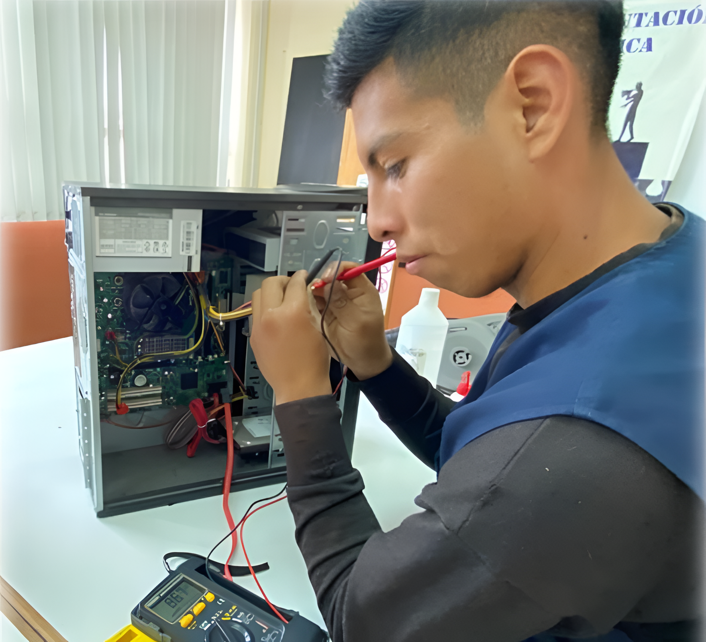

En este módulo los estudiantes se capacitan para realizar soporte técnico que comprende mantenimiento preventivo y correctivo a los equipos computacionales, instalación de sistemas operativos y software en general, manejo de diversas tecnologías de la información para el trabajo en oficina y en internet, trabajo remoto.
Administrar los sistemas operativos como Windows y Linux, desde una computadora de usuario a servidores. Desarrollar competencias en virtualización, cloud computing y gestión de servicios TI.
Soporte Técnico
Sistemas Operativos
Virtualización
Mantenimiento